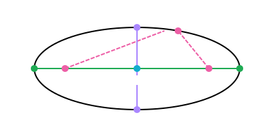
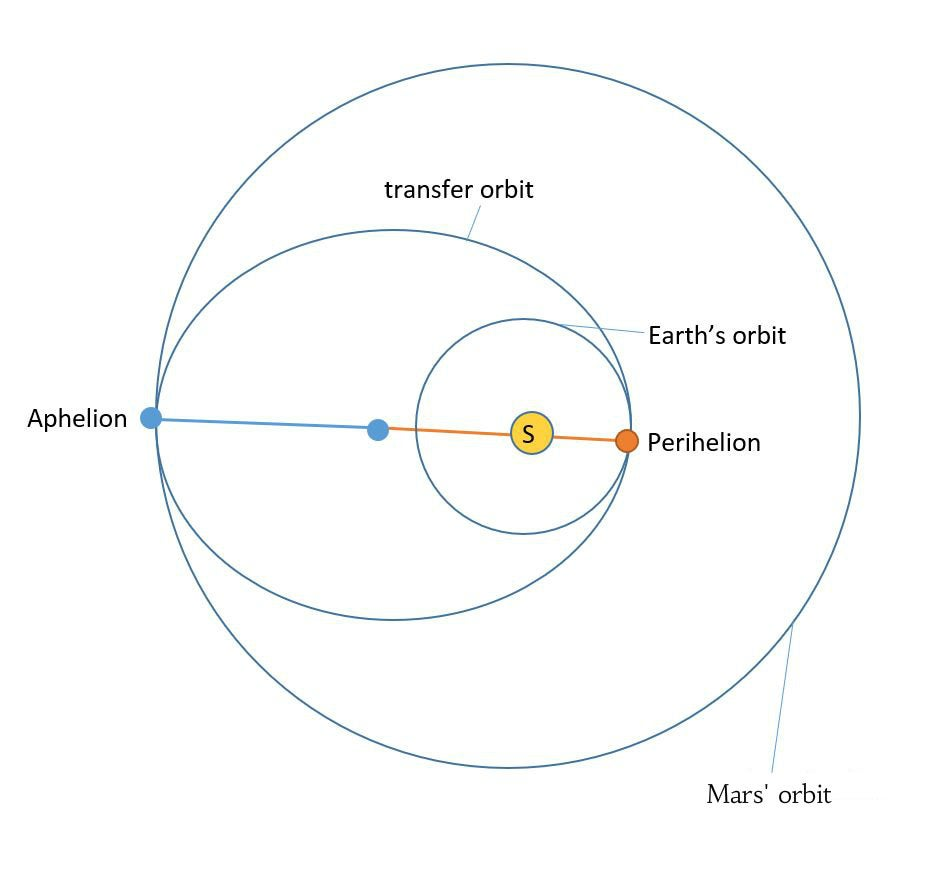
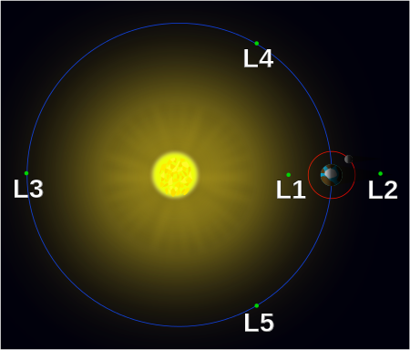

Kepler's Laws say a whole lot about the orbits of planets around stars. Let's begin with his first law of planetary motion.
The orbit of a planet is an ellipse with the Sun at one of the two foci.
What is an ellipse? An ellipse is like a circle, but stretched out so that the radius is not equal everywhere.
 From Khan AcademyEvery ellipse has two focal points. For any point P on our ellipse (like the pink point in the example), the sum of the distances from that point to each focal point should be equal to the length of the major axis.
The major axis of an ellipse is the longest line you can draw through the center (green line in the example). This means that, in this example, the length of the entire green line is equal to the combined lengths of the two dotted pink lines. This works for any point on the ellipse.
You can find the focal points of any ellipse by going through this process:
1. Find the center of the ellipse
2. Draw the major axis (longest line through the center) and the minor axis (shortest line through the center)
3. Take a compass and use it to measure the length of half of the major axis
4. Put your compass on the point where the ellipse and the minor axis cross (any of the two will work)
5. Use your compass to draw a circle (with a radius equal to half the length of the major axis) around that point
6. The points where your circle crosses the major axis are your two focal points
In this diagram two ellipses are shown, together with their two focal points. These ellipses represent the orbits of two planets around the same star. By Kepler's first law we know that their orbits are ellipses to begin with, but also that this star can be found on one of the two focal points of the ellipses.
Basically, if you have the orbits of two planets as ellipses, together with their focal points, you'll notice that there will be two overlapping focal points, which is where your star is.
Let us continue with the second law:
A line segment joining a planet and the Sun sweeps out equal areas during equal intervals of time.
A line segment in this scenario is a line between your planet and the Sun. Over time - as the planet does its orbit thing - this line segment will draw out an area. What Kepler says is that two areas with the same area will be drawn out in the same amount of time.
On our diagram, two areas (A1 and A2) are given. Their area is equal, and the planet will draw them in an equal amount of time. This means it is moving faster when it is drawing A1 and slower when it is drawing A2.
It is then logical to conclude that, the closer it is to its star, the faster a planet moves, and the further it is from its star, the slower a planet moves.
The major axis has two points crossing the ellipse itself, one of which is much closer to the star than the other. The point closest to the star is called the perihelion, and the point farthest from the star is called the aphelion. The planet travels the fastest at the perihelion, and the planet travels the slowest at the aphelion.
Now for the final, third law:
The square of a planet's orbital period is proportional to the cube of the length of the semi-major axis of its orbit.
This speaks for itself, but Kepler does mention 'proportional', so adding in a constant of proportionality gives us this formula:$$T^{2}=\frac{4\pi^{2}}{GM}a^{3}$$Where T is the orbital period (in seconds), G is the gravitational constant, M is the mass of the star, and a is the length of the semi-major axis of the planet's orbit. We can use this to calculate the length of the Earth's orbit around the sun with the following values.
G = 6.674×10−11 m3⋅kg−1⋅s−2
M = 1.989×10^30 kg
a = 149597887.5×10^3 m
Plugging in these values gives us an approximation of T, which is 2.99 x 10^4 s. Calculating this to years gives a result of 0.949 years. The reason why this isn't 1 year is because we are doing an approximation. Our formula did not take the eccentricity of the ellipse (how stretched it is) into account. We could add the length of the minor axis into our equation to get a more accurate result. For Earth's orbit this does not matter too much because it is quite close to being a circle. Its eccentricity is equal to 0.0167. Mercury has an eccentricity of 0.2, which is the highest of all planets in our solar system, this means our old formula would show a very inaccurate result for Mercury's orbit.
This third law also tells us that the planets farthest from a star have the longest orbital periods. Mercury (closest to the Sun) has an orbital period of 88 days. Neptune (farthest from the Sun) has an orbital period of 60190 days, which is over 165 Earth years.
The two-body problem is a mathematical problem where you have a universe with nothing but two bodies, one small and one large. The small body orbits around the large body and the core of the problem is to determine how it orbits around the large body. We are assuming that the center of mass of our large body is also the geometrical center of the large body, which we are also assuming is a sphere. Finally we assume that the small body does not influence the large body. This is a good assumption since the acceleration due to gravity is little to nothing (see Newton's universal law of gravitation).
To determine just how the small body will orbit around the large body, we need to find the velocity vector. When the small body enters the orbit, it already has an initial velocity (otherwise it'd just plummet straight towards the large body). After that the force of gravity applies acceleration on the small body, which changes its trajectory to an orbit around the large object. If the initial velocity is too small or the acceleration due to gravity is too large, this orbit may not be stable, causing your small body to eventually collide with the large body.
Anyways, you can calculate the acceleration using two formulas. First, we use Newton's law of universal gravitation:$$F=G\frac{m_{small}m_{large}}{r^{2}}$$After that we find acceleration from F=ma like this:$$a=\frac{F}{m_{small}}=G\frac{m_{large}}{r^{2}}$$And this is how you solve the two-body problem (if you wish to spend time drawing the vectors and using trigonometry to determine the eventual orbit).
Simulations with more than 2 bodies are called N-body problems. We will not get into those.
The velocity that an object requires to break free from the gravitational force of a body (and thus move away indefinitely) is called escape velocity or escape speed.
To derive the minimum velocity needed to escape that gravitational pull, we need to look into when escape velocity is reached.
When you are standing on Earth, there is gravitational potential energy as caused by the force of gravity. To escape this force, you would need kinetic energy equal to or larger than this potential energy.$$E_{kinetic}\ge -U_{grav}$$$$\frac{1}{2}mv^{2}=\frac{GMm}{r}$$All we have to do is move everything except v (for velocity) to the other side.$$v^{2}=\frac{2GMm}{rm}$$$$v=\sqrt{\frac{2GM}{r}}$$This is cool, but let's simplify it further by adding the gravitational acceleration 'g' on Earth into the formula. We know from deriving 9.81 before that g=(GM)/r². We can modify our formula like this:$$v=\sqrt{2\frac{\frac{GM}{r^{2}}}{\frac{r}{r^{2}}}}=\sqrt{2\frac{GM}{r^{2}}r}=\sqrt{2gr}$$Let's use this to calculate at what velocity rockets need to be flying to escape Earth's gravitational pull.
Let's say this rocket is 100 km (100000 m) in the air (above sea level), which is the point between airplane flight and spacecraft flight. With sea level being approximately 6371146 meters from the Earth's core, we can fill in the formula:$$v_{escape}=\sqrt{2⋅9.81\frac{m}{s^{2}}⋅7371146m}=12026\frac{m}{s}$$The rocket has to travel at 12026 meters per second in order to escape the Earth's gravitational pull.
When a body is in circular orbit, its velocity (the direction) is changing, so there must be acceleration. This is due to a force called centripetal force, which is always aimed inwards, to the center of your circular orbit.
Before we derive the formula for it, let's define angular velocity. Angular velocity in a circular orbit is how many degrees or radians you travel in that circle every second (dθ/dt).
| Name | Unit | Symbol |
|---|---|---|
| Angular Velocity (ω) | Degrees/radians per second | °/s or rad/s |
Alright, let's derive this thing. In this circular orbit, there is uniform circular motion. This means the velocity remains constant. I drew two velocities, v1 and v2 here. I then split this into two triangles. The first shows it with the radius (and angle θ). The second triangle is between v1 and v2. The angle between these two is also θ, because the object traveled over an angle θ from v1 to v2. These triangles are similar, so we can say the following:$$\frac{\Delta v}{v}=\frac{\Delta r}{r}$$$$\Delta v=v\frac{\Delta r}{r}$$Let's plug this for delta v into the formula for acceleration:$$a_{c}=\frac{\Delta v}{\Delta t}=\frac{v}{\Delta t}\frac{\Delta r}{r}=\frac{v}{r}\frac{\Delta r}{\Delta t}=\frac{v}{r}v=\frac{v^{2}}{r}$$Next, we have to convert this into a force, using Newton's second law of motion (F=ma):
$$F_{c}=m\frac{v^{2}}{r}$$
Transfer orbits are orbits used to go from a small orbit to a larger orbit. Let's take the following example:
 From InstructablesIn this case, we wish to go from the lower orbit around the Sun (at the distance of Earth) to a higher orbit around the Sun (at the distance of Mars). To do this the rocket will perform a Hohmann's Transfer.
While it is still in low orbit, the rocket will fire its engines at perihelion to enter the transfer orbit, as seen on the diagram. It will then turn off its engines and stay in this orbit until it reaches its aphelion. At the aphelion the rocket will once again fire its engines, this time to adjust its orbit to the new higher Mars orbit. After that it can turn off the engines once more and stay in this new higher orbit for the rest of time.
Let's try to calculate the change in velocity this causes. In the case of a circular or elliptic orbit, the centripetal force is equal to the force of gravity, so:$$\frac{mv^{2}}{r}=\frac{GMm}{r^{2}}$$$$v^{2}=\frac{GM}{r}$$$$v=\sqrt\frac{GM}{r}$$We can calculate the mechanical energy of our spacecraft like so:$$E_{mech}=K+U$$$$E_{mech}=\frac{1}{2}mv^{2}-\frac{GMm}{r}$$We can replace v² by the value we calculated before:$$E_{mech}=\frac{GMm}{2r}-\frac{GMm}{r}$$$$E_{mech}=-\frac{GMm}{2r}$$This is good for a circular orbit, but for an elliptical orbit like our transfer orbit we must replace r with a, representing the semi-major axis.
Take a step back. In our original diagram there are two radii you can view. Radius 1 is the distance between the central body and the small orbit (r1), while radius 2 is the distance between the central body and the large orbit (r2). The sum of r1 and r2 is equal to the major axis of the transfer orbit, so r1+r2=2a. Let's add this into our equation:$$E_{mech}=-\frac{GMm}{r_{1}+r_{2}}$$This is now an equation showing the mechanical energy of the object in its circular orbit. Since mechanical energy is conserved, we can set this equal to the mechanical energy in the elliptical transfer orbit and calculate just how much velocity the spacecraft has after the first burn of the engines..$$-\frac{GMm}{r_{1}+r_{2}}=\frac{1}{2}mv_{1}^{2}-\frac{GMm}{r_{1}}$$This is the same concept as before, where on the right we do E=K+U. This time we cannot replace v² by that thing, because that thing was only meant for circular orbit. Let's simplify to v=.$$v_{1}=\sqrt{2GM(\frac{1}{r_{1}}-\frac{1}{r_{1}+r_{2}})}$$Next, we can calculate the velocity of the spacecraft when burn 2 is about to happen (at the end of the transfer orbit). This is basically the same thing, with v1 becoming v2 in kinetic energy and r1 becoming r2 in the potential energy formula.$$-\frac{GMm}{r_{1}+r_{2}}=\frac{1}{2}mv_{2}^{2}-\frac{GMm}{r_{2}}$$$$v_{2}=\sqrt{2GM(\frac{1}{r_{2}}-\frac{1}{r_{1}+r_{2}})}$$Okay, now we have 3 equations. The first equation lets us calculate the velocity at any point in the circular orbits:$$v=\sqrt\frac{GM}{r}$$Using this equation, we can calculate the velocity right before the first burn, and right after the second burn, both in the circular orbits.
Using the second and third equations, we can respectively calculate the velocity right after the first burn and right before the second burn, both in the elliptical transfer orbit:$$v_{1}=\sqrt{2GM(\frac{1}{r_{1}}-\frac{1}{r_{1}+r_{2}})}$$$$v_{2}=\sqrt{2GM(\frac{1}{r_{2}}-\frac{1}{r_{1}+r_{2}})}$$If we calculate all of these values in an example situation, we can easily determine the change in velocity or acceleration at each burn. This way you could plan out a spacecraft's route between two orbits using a Hohmann's Transfer.
Next, let us calculate the time this transfer takes. We already know (thanks to Kepler's third law), that you can calculate the time an orbit takes using this formula:$$T^{2}=\frac{4\pi^{2}}{GM}a^{3}$$However, we only need half of this time, since a Hohmann transfer only orbits half of that transfer orbit. We can also replace a (semi-major axis of ellipse) with r1 and r2 from before:$$T=\frac{\sqrt{\frac{4\pi^{2}}{GM}(\frac{r_{1}+r_{2}}{2})^{3}}}{2}$$And that's all we'll learn about a Hohmann Transfer. Pretty cool, right?
Lagrange points are points around 2 bodies (i.e. a planet and its star, a planet and its moon) where the gravitational pull from both bodies on a third body balances out, giving the small third object a gravitational pull nearing 0. These points can be very useful for space exploration. In each scenario there will be 5 Lagrange points, like so:
 Xander89, CC BY 3.0, via Wikimedia CommonsL1 is always found between the two large bodies.
L2 is always found behind the smaller body, where it blocks the small body's view of the largest body.
L3 always lies behind the largest body, this is considered the most unstable Lagrange point.
L4 and L5 form equilateral triangles with the two large bodies.
Perturbations are small deviations from the calculated paths of Keplerian orbits, due to the non-spherical shape of objects in space, or the gravitational interactions between multiple celestial bodies.
Satellites can have many types of orbits, each having its advantages and disadvantages. Let's go over the three most common types.
Geostationary orbits are orbits at an altitude of 35786 km. This is a great orbit for satellites since it completes that orbit in exactly 1 Earth day. This has the effect of giving it a fixed position relative to Earth; it will always be looking at the same place on our planet.
Polar orbits did not choose their name randomly, because they quite literally orbit around the Earth's poles. This allows them to see a different slice of its surface every rotation. It is very useful for satellites hoping to capture a full image of the surface of Earth (or weather satellites), because it will achieve this feat after a few orbits. Watch this short demonstration for better understanding:
Finally, heliocentric orbits are orbits around the center of the Sun. Every planet in the Solar System is in heliocentric orbit, but the moons of those planets are not.
Wikipedia: Hohmann's Transfer Orbit
YouTube: Hohmann's Transfer Time
YouTube: Hohmann's Transfer Velocity